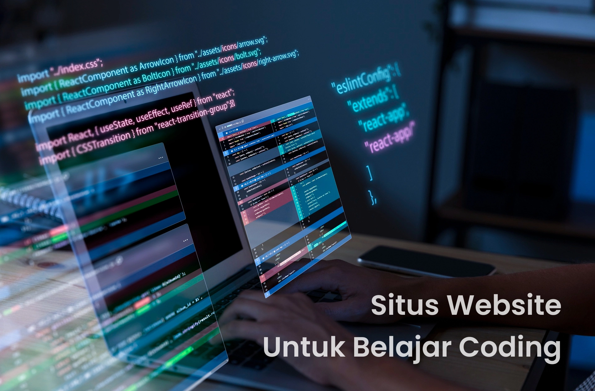

Memahami website dan coding

Mengenal Website
Website adalah kumpulan halaman web yang saling terhubung dan biasanya berada di bawah satu nama domain (contoh: google.com). Halaman-halaman ini bisa diakses melalui internet menggunakan browser (seperti Chrome atau Firefox).Fungsi Utama: Menyediakan informasi, sarana komunikasi, transaksi jual beli (e-commerce), hingga hiburan.Komponen Dasar: Terdiri dari teks, gambar, video, dan animasi yang digabungkan menjadi satu.Pelajari lebih lanjut mengenai dasar-dasar dan fungsi website di Exabytes Indonesia.
Mengenal Coding (Pemrograman)
Coding atau pemrograman adalah proses membuat perangkat lunak atau aplikasi dengan menggunakan bahasa pemrograman. Dalam konteks website, coding digunakan untuk membuat dan mengembangkan situs web yang interaktif dan fungsional.
Hubungan Keduanya
Dalam pembuatan website (Web Development), coding adalah fondasi utamanya. Anda memerlukan keterampilan coding untuk membangun struktur hingga tampilan akhir dari situs web tersebut.HTML: Berfungsi menyusun kerangka atau struktur dasar halaman web.CSS: Berfungsi untuk mempercantik tampilan, mengatur warna, dan tata letak.JavaScript: Berfungsi untuk memberikan nyawa atau interaksi (seperti animasi, tombol yang bisa diklik, dll).